1.求三个成等比的数，使其中任意一个减去一给定数，均为平方数．
给定数12．
求一平方数，比另一平方数大12．
“这是容易的［卷Ⅱ，10题］；
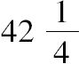
就是一个这样的数．”令第一个数为，第三个数为x2；
则中间的数=
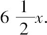
从而
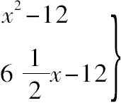
必须都是平方数；其差=x2-
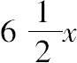
=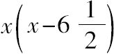
；两因子的差的一半的平方=169/16；
因此，令
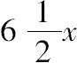
-12=169/16，有x=361/104，所以
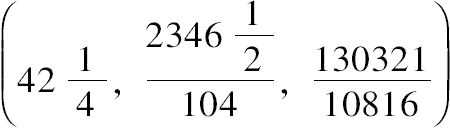
是一组解．2.求三个成等比的数，使其中任意一个加上一给定数，均为平方数．
给定数20．
取一个平方数，使其加上20仍是平方数，不妨取为16．
令首项为16，末项为x2，则中间项=4x．
因此
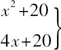
必须都是平方数．其差x2-4x=x（x-4），用常用方法可得4x+20=4，但这是不合理的，其中4应该是大于20的数才行．
由于4=
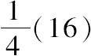
，其中16是平方数，且加上20仍是平方数．因此，为了置换16，必须找一个平方数大于4·20，且加上20仍是平方数．
显然 81＞80；因此，令所求平方数为（m+9）2，且
（m+9）2+20=平方数，不妨说=（m-11）2；
从而 m=1/2，所求平方数=
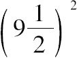
=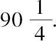
现在，设三个数为
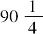
，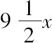
，x2，则
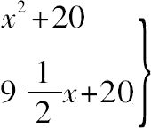
必须都是平方数．其差=
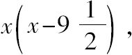
令
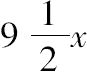
+20=361/16．因此 x=41/152，且
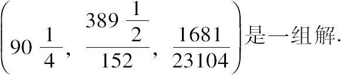
3.给定一个数，求另外三个数，使其中任意一个，以及任意两个的乘积加上该给定数，均为平方数．
“在《推论集》中已经知道如下命题，对于两个数而言，如果每个数，以及它们的乘积加上同一给定数，各自均为平方数，则这两个数分别为相邻两数的平方减去给定的数．”
因此，令平方数为（x+3）2，（x+4）2[1]，并分别减去给定的数5，可得
所求的第一个数为x2+6x+4，
第二个数为x2+8x+11，
现令第三个数为它们的和的二倍减去1，则第三个数为4x2+28x+29．
从而 4x2+28x+34=平方数，不妨说=（2x-6）2．
所以 x=1/26，且
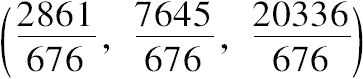
是一组解[2]．4.给定一个数，求另外三个数，使其中任意一个，以及任意两个的乘积减去该给定数，均为平方数．
给定数为6．
取两个相邻的平方数为x2，x2+2x+1．
分别加上6，
则假设第一个数为x2+6，
第二个数为x2+2x+7．
现令第三个数[3]为前两数和的二倍减1，
亦即 4x2+4x+25．
则第三个数-6=4x2+4x+19=平方数，不妨说=（2x-6）2．
从而 x=17/28，且
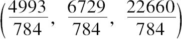
是一组解．［《推论集》中有和上题相同的命题，只是要用“相减”代替“相加”．］
5.求三个平方数，使其中任意两个的乘积加上此两数的和，以及加上剩下的平方数，均为平方数．
“在《推论集》中，已经知道如下命题，”
如果给定两个相邻的平方数，第三个数是这相邻平方数的和的二倍再加上2，
那么，这三个数满足，其中任意两个的乘积加上该两数本身的和，或者加上剩余的那个数，均为平方数．
假设 第一个平方数为x2+2x+1，
第二个平方数为x2+4x+4，
则 第三个平方数为4x2+12x+12．
因此 x2+3x+3=平方数，不妨说=（x-3）2．
从而
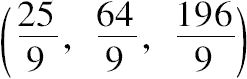
是一组解．6.求三个数，使其中任意一个减去2均为平方数，且其中任意两个的乘积减去此两数的和，以及减去剩下的数，均为平方数．
给上一题所引用的《推论集》中的三个数各自加上2．
这样得到的数是 x2+2，x2+2x+3，4x2+4x+6．
现在对于这三个数，所有条件都成立[4]，
最后剩余的条件是
4x2+4x+6-2=平方数．
除以4，
x2+x+1=平方数，不妨说=（x-2）2．
从而 x=3/5，
且
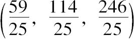
是一组解．［卷Ⅴ，7题的］引理Ⅰ：求两个数，使其乘积加上这两数的平方和仍是平方数．
假设第一个数为x，则第二个数可以任意取（m），不妨说1，
因此 x·1+x2+1=x2+x+1=平方数，不妨说=（x-2）2．
从而 x=3/5， 且
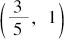
或（3，5）是一组解．［卷Ⅴ，7题的］引理Ⅱ：求三个具有相同面积的（有理）直角三角形[5]．
首先，求两个数，使它们的乘积+它们的平方和=平方数，
例如在引理Ⅰ中，（3，5）就是这样一组解．
那么，三个直角三角形可由数组（7，3），（7，5），（7，3+5）依次生成[6]．
［亦即，生成直角三角形（72+32，72-32，2·7·3），等等］．
三角形分别为（40，42，58），（24，70，74），（15，112，113），它们具有相同的面积840．
7.求三个数，使其中任意一个的平方±这三个数的和均为平方数．
因为在直角三角形中，
（斜边）2+4·面积=平方数，
因此可取所求三个数为三个斜边，而取三个数的和为面积的四倍．
从而，必须寻找三个具有相同面积的直角三角形，
例如，在上述引理Ⅱ中，有
（40，42，58），（24，70，74），（15，112，113）．
返回本题，令所求三个数为58x，74x，113x；
从而它们的和 245x=4·任一三角形面积=3360x2．
所以 x=7/96，
且
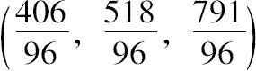
是一组解．［卷Ⅴ，8题的］引理
给定三个平方数，则可以找到三个数，使其中任意两个数的乘积分别等于这三个平方数．
平方数为4，9，16．
假设第一个数为x，则其他数为4/x，9/x； 且
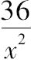
=16．从而x=6/4， 所求数为（
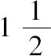
，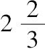
，6）．观察x=6/4，其中6是2和3的乘积，4是16的平方根．
因此可以得出如下法则．取两个平方根（2，3）的乘积，并除以第三个平方数的根4，则结果为第一个数；然后4，9分别除以上述结果，便可得到第二个和第三个数．
8.求三个数，使其中任意两个的乘积±这三个数的和均为平方数．
在卷Ⅴ，7题的引理Ⅱ中，已经求出三个具有相同面积的直角三角形；
它们的斜边的平方是3364，5476，12769．
现在，应用本题的引理，求三个数使其中任意两个数的乘积分别等于这三个平方数．
由于，这三个平方数±4·面积（3360）=平方数；
所以，所求三个数是
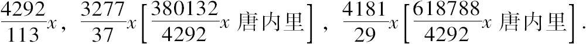
剩余的条件是，
所求三个数的和=3360x2．
因此
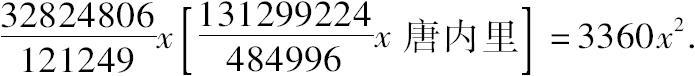
从而
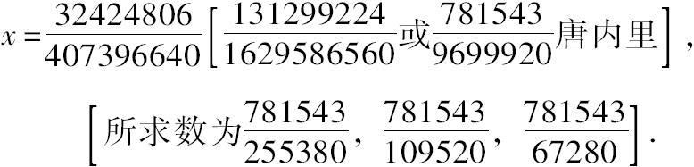
9.将单位1分为两部分，使同一个给定数加到任一部分上，结果均为平方数．
必要条件．给定数不能是奇数，并且该数的两倍加1不能被任何增加了1就可被4除尽的素数（即形如4n-1的一切素数）除尽．
设给定数是6，因而13应被分为两个平方数，其中每一个＞6．如果能将13分为差＜1的两个平方数，就解决了这个问题．
取13的一半即
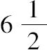
，必须对它加上一个小的分数，从而使其为一个平方数，或者，将其乘以4，则必须使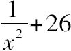
为一个平方数，即26x2+1=平方数，不妨设=（5x+1）2，由此x=10．这就是说，为使26成为一个平方数，必须加上1/100，或者说，要使
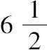
成为平方数，须加上1/400，即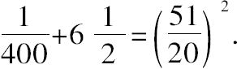
因此，必须将13分为两个平方数，使得每一个平方数的平方根尽可能接近 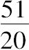
由于13=22+32，所以，要找两个数，使3减第一个数=，从而第一个数=
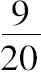
，而2+第二个数=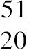
，从而第二个数=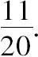
因此可把所求的两个平方数写成（11x+2）2，（3-9x）2的形式（用x代替
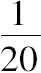
即得）．二数和=202x2-10x+13=13．
所以x=
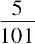
，所求两数的平方根分别为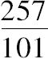
，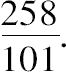
从每一个平方数中减去6，就可得到1的两部分：
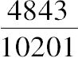
，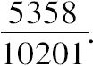
10.将单位1分为两部分，使两个不同的给定数分别加到每一部分上，结果均为平方数．
令给定的数[7]是2，6．
如图所示，其中DA=2，AB=1，BE=6，且G是AB之间的一个点，G的选取必须满足DG，GE均为平方数．
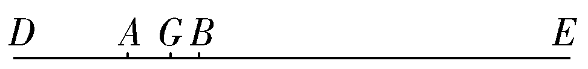
现在DE=9．因此必须将9分解成两部分，是其中之一位于2和3之间．
令两个平方数为x2，9-x2， 其中2＜x2＜3．
选取两个平方数，使较小的＞2，较大的＜3．
不妨取为
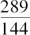
，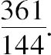
如果让x2位于这两平方数之间，则
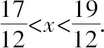
因此，令9-x2=平方数=（3-mx）2，不妨说．
得 x=
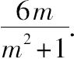
从而
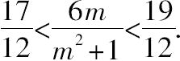
第一个不等式，得 72m＞17m2+17；
其中 362-17·17=1007，
它的平方根不大于31[8]；
因此 m≤
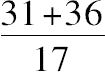
，即类似地，又不等式 19m2+19＞72m
可得
在这两个界限之间，选取最简单的m=所以9-x2=，
从而
因此
且1的两部分为
11.将单位1分为三部分，使同一个给定数加到任一部分上，结果均为平方数．
必要条件：所给定的数不能是2，或8的倍数加2．
设给定数为3．
则本题相当于把10分成三个平方数之和，且每个平方数＞3．
10的1/3是，求一个较小的分数，使为平方数，
即 30x2+1=平方数，不妨说=（5x+1）2．
从而 x=2，x2=4，，
且 =平方数．
所以，现在需要把10分成三个平方数，使其根尽可能逼近于11/6．
显然，10=9+1=32+
通分 3，3/5，4/5和11/6，得90/30，18/30，24/30和55/30．
由于 55/30===
因此，假设所求平方数之根是
3-35x，，，其中x不是1/30，但却非常逼近它．
从而，三个平方数之和=10-116x+3555x2=10．
得 本题答案可由此算出．
12.将单位1分为三部分，使三个不同的给定数依次加到每一部分上，结果均为平方数．
则本题相当于把10分成三个平方数之和，且第一个＞2，第二个＞3，第三个＞4．
如果给每一个加上单位1的1/2，则必须求三个平方数使其和为10，其中第一个位于2，之间，第二个位于3，之间，第三个位于4，之间．
首先，必须将10（两个平方数之和）分成这样的两个平方数，其中之一位于2，之间；然后，从后边的平方数中减去2，就可以得到所求的单位1的第一部分．
下一步，再把另一个平方数分成两个平方数，使其中之一位于3，之间；然后，从后边的平方数中减去3，就可以得到所求的单位1的第二部分．
类似可得，所求的单位1的第三部分[9]．
13.将一个给定数分为三部分，使其中任意两部分的和，均为平方数．
给定数为10．
因为，其中任意两部分的和是小于10的平方数，且三个平方数的和是三部分的和的二倍，即20．
所以，必须将20分成三个平方数，其中每一个＜10．
但是，20是两平方数16，4的和；
如果令4为所求平方数的第一个，那么必须把16分成两平方数，其中每一个＜10，换句话，其中之一位于6，10之间．这是我们已经学过的［卷Ⅴ，10题］．[10]
按以前的方法求出三个平方数，每一个＜10，且它们的和为20；
最后，10减去每一个平方数就可以得到10所分成的三个部分．
14.将一个给定数分为四部分，使其中任意三部分的和均为平方数．
给定数为10.
因为，四个平方数的和=10所分成的四部分的和的三倍=3·10.
所以，必须将30分成四个平方数，其中每一个＜10.
（1）如果我们采用逼近法，必须使每一个平方数尽可能接近；在求出平方数之后，再用10减去每一个平方数，就可以求出所要求的四个部分．
（2）或者，观察30=16+9+4+1，直接取4，9为其中两个平方数，然后再将17分成两个平方数，其中每一个＜10.
下一步，如果按照我们所学过的方法[11]［参见卷Ⅴ，10题］，将17分成两个平方数，其中之一位于，10之间，那么所得平方数必然满足条件．
这样所求出的四个平方数，两个是4，9，另两个是17所分成的两部分，
满足其和为30，且其中每一个小于10.
最后再用10减去每一个平方数，就可以得到10所分成的四个部分，其中两个是1，6.
15.求三个数，使其和的立方加上其中任意一个数，均为立方数．
设所求三个数的和为x，且所求三个数为7x3，26x3，63x3.
则 96x3=x，或者96x2=1.
但96不是平方数；因此为了问题可解必须用平方数置换它．
现在 96=（23-1）+（33-12）+（43-1），
换句话，96是三个数的和，其中每一个都是立方数减1．
因此，必须求三个数，使其中每一个都是立方数减1，且这三个数的和为立方数．
假设立方根[12]为m+1，2-m，2，
那么所求的三个数是
m3+3m2+3m，7-12m+6m2-m3，7；
不妨说，它们的和=9m2-9m+14=平方数=（3m-4）2．
于是 ，所求三个数是
返回最初的问题，设所求数的和为x，所求数依次为
从而
除以15x，得2916x2=225，
所以，可由此算出所求数．
16.求三个数，使其和的立方减去其中任意一个数，均为立方数．
设所求三个数的和为x，且所求三个数为
则
如果是两平方数之比，那么问题就可解了．
但是=3-（三个立方数之和）.
所以必须求三个立方数，每一个＜1，
且3-它们的和=平方数．
如果设想三个立方数之和＜1，
那么平方数＞2.
不妨令[13]平方数为
因此，所求立方数之和=或者，
换句话，必须将162分成三个立方数．
但是 162=125+64-27；
而且在《推论集》中已知，两立方之差可以转化成两立方之和．
这样一来，三个立方数就已经找到了[14]．
再从头开始，由于x=
所以，三数之和
所以，三个数也可由此确定．
17.求三个数，使其中任意一个数减去这三数的和的立方，均为立方数．
设所求三个数的和为x，且所求三个数为2x3，9x3，28x3.
则 39x2=1；
因此，必须用一个平方数替代39，且平方数=三个立方数之和+3；
换句话，必须求三个立方数，使
三个立方数的和+3=平方数．
不妨令[15]三个立方数的和的根为m，3-m，1.
所以，9m2+31-27m=平方数，不妨说=（3m-7）2．
从而 ，且立方数的根是
再从头开始，现在设和为x，且
所求三个数为
从而 1445x2=125，，且
所求三个数可由此算出．
18.求三个数，使其和为平方数，且它们的和的立方加上其中任意一个数，均为平方数．
设所求三个数的和为x2，且所求数为3x6，8x6，15x6.
则 26x4=1；如果26是四次方数，那么问题可解．
所以，必须用四次方数替换26，换句话，必须求三个数使每一个加上1均为平方数，而且这三个数之和为四次方数．
为此，不妨令所求三数是 m4-2m2，m2+2m，m2-2m ［其和为m4］；
这是满足条件的不确定的数．其中m可以任意取值，不妨为3，则相应的三个具体数是63，15，3．
再从头开始，现在令和为x2，且所求三个数为3x6，15x6，63x6，
从而 81x6=x2，且
所以 所求三个数为
19.求三个数，使其和为平方数，且它们的和的立方减去其中任意一个数，均为平方数．
19a.求三个数，使其和为平方数，且其中任意一个数减去它们的和的立方，均为平方数．
19b.求三个数，使其和为一给定数，且它们的和的立方加上其中任意一个数，均为平方数．
19c.求三个数，使其和为一给定数，且它们的和的立方减去其中任意一个数，均为平方数．
假设所求三个数之和为2，则其立方是8．
必须使8减去每一个所求数均为平方数．
因此，必须将22分解成三个平方数，且其中每一个平方数＞6；
然后，用8减去每一个平方数，便可得所求三个数．
但是，如何将22分解成三个平方数，且6＜每一个平方数＜8，
我们前面［卷Ⅴ，11题］已经掌握[16]．
20.将一个给定的分数分为三部分，使其中任意一部分减去这三部分的和的立方，均为平方数．
给定的分数为1/4．
因此 每一部分=．
因此 三部分的和==三个平方数的和+.
因此必须将分成三个平方数，这很简单[17]
21.求三个平方数，使它们的连乘积加上其中任意一个平方数，均为平方数．
假设所求三个平方数的连乘积为x2．
先求另外三个平方数，其中每一个加上1均为平方数．
在直角三角形中，用一个直角边的平方除以另一个直角边的平方，可以得到这样的平方数[18]．
现在，令所求平方数是
根据假设
所求三个平方数的连乘积==x2.
从而 =1；
如果是平方数，那么问题可解．
但是它不是的，因此必须求三个直角三角形，使p1p2p3b1b2b3=平方数，
其中（bi，pi）是直角边．
现在任意指定一个三角形是（3，4，5），那么必须使12p1p2b1b2是平方数，或者是平方数．
“这是容易的[19]，”且三个直角三角形为（3，4，5），（9，40，41），（8，15，17）或类似于它们．
再从头开始，令所求三个平方数为
且其连乘积=x2，则可求出有理的x值[x=16/9，且所求平方数为16/9，100/9，4/25]．（9，40，41）（8，15，17）
22.求三个平方数，使它们的连乘积减去其中任意一个平方数，均为平方数．
设所求三个平方数的连乘积为x2，并利用有理直角三角形的方法，
令所求三个平方数为
因此，连乘积=x2，
或
如果 是四次平方数，换句话，如果是平方数，那么问题得解．
因此，必须求三个直角三角形，其中h1，h2，h3依次表示斜边，p1，p2，p3依次表示直角边，满足h1h2h3p1p2p3=平方数．
假设其中一个三角形为（3，4，5），并取h3p3=5·4=20，则
5h1p1h2p2=平方数．
如果h1p1=5h2p2，那么上述条件成立．
为此，首先求两个直角三角形［参见上题］，用（x1，y1）表示一个三角形的两直角边，用（x2，y2）表示另一个的两直角边，满足x1y1=5x2y2.
由这样一对三角形便可生成另两个直角三角形，满足一个三角形的斜边乘以它的一条直角边=另一三角形的斜边乘以它的一条直角边的五倍[20]．
由于所找到的满足x1y1=5x2y2的三角形依次是（5，12，13）和（3，4，5）[21]，
所以，必须由此求两个新直角三角形（h1，p1，b1）和（h2，p2，b2），
满足h1p1=30和h2p2=6，其中30和6是两个三角形的面积．
这些三角形依次是和.
再从头开始，令所求三个平方数为
其连乘积=x2；
所以，开平方，得
从而 ，并由此可算出所求三个平方数．
23.求三个平方数，使其中任意一个平方数减去它们的连乘积，均为平方数．
假设三个平方数的连乘积为x2，并且和前面一样，用直角三角形的方法来假定所求平方数．
如果我们直接取上题所求出的同样的三角形，并令所求三个平方数为
则其中每一个减去连乘积（x2）均为平方数．
剩余的条件是，这三个平方数的连乘积=x2；
由此得，问题得解．
24.求三个平方数，使其中任意两个的乘积加上1，均为平方数．
因为 第一个和第二个的乘积+1=平方数，且第三个也是平方数，等等．
所以 三个平方数的连乘积+其中每一个平方数=平方数．
从而 此题化简为前面的卷Ⅴ，21题[22]．
25.求三个平方数，使其中任意两个的乘积减去1，均为平方数．
类似地，此题可化简为前面的卷Ⅴ，22题．
26.求三个平方数，使单位1减去其中任意两个的乘积，结果均为平方数．
再次，此题可化简为前面的卷Ⅴ，23题．
27.给定一个数，求三个平方数，使其中任意两个的和加上此给定数，均为平方数．
给定数为15.
设所求平方数之一是9；
则必须求另外两个平方数，使每一个+24=平方数，且它们的和+15=平方数．
为了求两个平方数，其中每一个+24=平方数，需要将24以两种形式分解成两个因子[23]．
令其中一对因子为，6x，且令一个平方根是两因子的差的一半，或者 -3x.
令另一对因子为，8x，且令另一平方根是它们的差的一半，或者 -4x.
所以，每一个平方数+24均为平方数．
剩余的条件是，两个平方数的和+15=平方数；
因此
或者 =平方数，不妨说=25x2
所以 ，问题得解[24]．
28.给定一个数，求三个平方数，使其中任意两个的和减去此给定数，均为平方数．
给定数为13.
假设平方数之一是25；
则必须求另外两个平方数，使每一个+12=平方数，且它们的和-13=平方数．
将12以两种方式分成两个因子，并令这两对因子分别为和
取每对因子的差的一半，分别为平方数的根，以及令平方数为
那么，每一个平方数+12均为平方数．
剩余的条件是，两平方数的和-13=平方数，
=平方数，不妨说=
因此，x=2， 且问题得解[25]．
29.求三个平方数，使它们的平方的和，仍是一个平方数．
设三个平方数分别为x2，4，9.[26]
因此 x4+97=平方数，不妨说=（x2-10）2；
从而
如果3和20的比率是平方数和平方数的比率，那么问题可解；但它不是的．
因此，必须求两个平方数（不妨说，p2，q2）和一个数（不妨说，m），
满足m2-p4-q4比2m具有平方数和平方数的比率．
现在令 p2=z2，q2=4 和 m=z2+4.
那么 m2-p4-q4=（z2+4）2-z4-16=8z2.
因此 ，或者必须是平方数和平方数的比率．
为此，不妨令 z2+4=（z+1）2；
所以 ，且所求平方数是 ，q2=4，所求数是
或者，如果每一个乘以4，则有 p2=9，q2=16，m=25.
再从头开始，现在令所求平方数为x2，9，16；
那么， 平方数的和=x4+337=（x2-25）2， 从而
所求平方数是，9，16.
30.［本题的表述为希腊诗文形式，其含义如下．］
某人买酒喝，一部分单价为8个银币（drachma：古希腊银币名，译文简称银币），另一部分单价为5个银币，共支付的银币是一个平方数；如果60加到这个平方数，结果仍是平方数，且最后这个平方数之根等于所买酒的总量（，古希腊容积名，译文简称酒量）．求这人所买的两种酒量各是多少？
令x=所买酒的总量；
因此，共支付的银币数是x2-60，
且x2-60=平方数，不妨说=（x-m）2．
从而x=
由于，（5个银币酒的银币数的）+（8个银币酒的银币数的）=x；
因此，总银币数x2-60必须能分成两部分，使一部分的+另一部分的=x．
这样一来，x必须满足
亦即 5x＜x2-60＜8x．
（1）因为 x2＞5x+60，
x2=5x+一个大于60的数，
从而x大于11．
（2） x2＜8x+60
换句话， x2=8x+一个大于60的数，
从而x小于12．
因此 11＜x＜12．
前面已知
所以 22m＜m2+60＜24m．
进一步
（1）22m=m2+（一个小于60的数），
因此m大于19．
（2）24m=m2+（一个大于60的数），
因此m小于21．
所以取m=20，且
x2-60=（x-20）2，
可得 x=，x2=，且 x2-60=
现在，还需要将分成两部分，使一部分的+另一部分的=
令第一部分=5z，则第二部分的
从而第二部分=92-8z．
所以，5z+92-8z=
故 5银币的酒量是
8银币的酒量是
[1]《推论集》指出，如果a是给定的数，
则数x2-a，（x+1）2-a满足题设3个条件．事实上，
它们的乘积+a={x（x+1）}2-a（2x2+2x+1）+a2+a
={x（x+1）}2-2ax（x+1）+a2={x（x+1）-a}2．
丢番图此处没有任何解释，进一步指出，
如果 X=x2-a，Y=（x+1）2-a
则应该假设第三个数 Z=2（X+Y）-1．
事实上，这3个数自动的满足题设6个条件中的另外两个条件：
对于 Z=2（X+Y）-1=2（2x2+2x+1）-4a-a=（2x+1）2-4a；
有 XZ+a=x2（2x+1）2-a{（2x+1）2+4x2}+4a2+a
=x2（2x+1）2-a·4x（2x+1）+4a2={x（2x+1）-2a}2，
且 YZ+a=（x+1）2（2x+1）2-a{（2x+1）2+4（x+1）2}+4a2+a
=（x+1）2（2x+1）2-a（8x2+12x+4）+4a2
={（x+1）（2x+1）-2a}2．
从而，最后剩余的条件是
Z+a=平方数，
亦即 （2x+1）2-3a=平方数，不妨说=（2x-k）2，
那么，便可容易求出x．
[2]用现代符号，丢番图此题就是求三个数ξ，η，ζ，满足如下6个条件：
ξ+a=r2，ηζ+a=u2，
η+a=s2，ζξ+a=v2，
ζ+a=t2，ζη+a=w2.
费马注意到，由此可推出如下问题的解：
求四个数，使其中任意一对的乘积加上同一给定数，均为平方数．
如果把前三个数，直接取为丢番图的解，并设第四个数为x+1．
则可以推出第四个数应满足的3个条件．
因此费马的方法就是要解一个所谓的“叁重方程”问题．
[3]和上题，卷Ⅴ，3题一样，丢番图直接作出此假设，其原因与注释［1］相同，只要将整个过程的-a替换a即可．
X=x2+2，
[4]如果 Y=（x+1）2+2，
Z=2{x2+（x+1）2+1}+2.
容易验证：XY-（X+Y）=（x2+x+1）2，
XZ-（X+Z）=（2x2+x+2）2，
YZ-（Y+Z）=（2x2+3x+3）2， XY-Z=（x2+x）2，
XZ-Y=（2x2+x+3）2，
YZ-X=（2x2+3x+4）2..
[5]所有丢番图的直角三角形都必须理解成各边都是有理数的直角三角形，以后简称直角三角形．
[6]丢番图未作解释，直接说，如果 ab+a2+b2=c2，
则直角三角形依次可由（c，a），（c，b），（c，a+b）生成，且它们的面积是相等的．
事实上，显然，面积依次是 （c2-a2）ca，（c2-b2）cb，{（a+b）2-c2}（a+b）c，
且容易推出每一个面积都等于 abc（a+b）．
Nesselmann曾有过另外一种解释．
如果（m，n），（m，q），（m，r）依次生成三个面积相等的直角三角形，
那么，他认为丢番图应该知道，r=n+q．
事实上，因为面积相等，因此
n（m2-n2）=q（m2-q2）=r（r2-m2）
首先，m2n-n3=m2q-q3，
因此，m2==n2+nq+q2．
现在，给定（q，m，n），来求r.
因为q（m2-q2）=r（r2-m2），
且从上述知道m2-q2=n2+nq，
所以q（n2+nq）=r（r2-n2-nq-q2），
或者q（n2+nr）+q2（n+r）=r（r2-n2）．
除以r+n，得qn+q2=r2-rn；
从而（q+r）n=r2-q2，
且r=q+n．
[7]Loria，以及Nesselmann都指出，丢番图忽略了给出本题的必要条件，即两个给定的数加上1必须使两平方数的和．
[8]精确地说，指平方根的整数部分不大于31．此处给出的是不足近似值，且31是最近的整数界限．本题另一个不等式类似．
[9]丢番图本题没有具体答案，仅简单地给出解法．Wertheim按照丢番图的方法详细做了解答；其过程并非简单，因此值得复述如下．
Ⅰ.首先必须把10分成两个平方数，使其中之一位于2和3之间．
第一个平方数必须非常接近；因此，寻找一个较小的分数使其加上为平方数：换句话，必须使为平方数．这个表达式可以改写为，为了使其为平方数，不妨令
10y2+1=（3y+1）2，
从而 y=6，y2=36，x2=144，因此=，
这个数可以作为其和为10的两平方数的第一个的近似值．
现在，因为10=12+32，且，而，
所以，令 （1+7x）2+（3-3x）2=10， ［参见Ⅴ，9题］
从而
因此就是把10所分成的两个平方数，其中第一个确实位于2，之间．
Ⅱ.下一步，必须把平方数分成两个平方数，其中之一称为x2，并位于3和4之间．［可应用卷Ⅴ，10题的方法．］
替代3，4，用作为界限．
因此
或
而且 必须是平方数，不妨说=
从而
其中k的取值必须满足如下条件：
（1）
有这个不等式可知 k＜2.8…，
（2）
从而 k＞2.3…，
因此我们可以令 k=2.5.
所以
且
因此，10所分成的三个平方数为
第一个减去2，第二个减去3，第三个减去4，可知单位1所分成的三个部分为
[10]Wertheim给出了一个完整解法，如下：
令平方数为x2，16-x2，其中之一，x2位于6和10之间．
替代6和10，令界限为和9，因此
为了使16-x2为平方数，不妨令
16-x2=（4-kx）2，
从而
其中k必须满足
（1），且（2）
由这些条件可以得出k的界限为2.84…和2.21…．
因此我们可以取最简单的k=
从而
所求的20分成的三个平方数为
10分别减去每一个，就可以得到10所分成的三个部分
[11]Wertheim给出了这部分的解答．
按惯例，令，或者为平方数．
设，则必须使为平方数．
不妨令 34y2+1=平方数=（6y-1）2，
得 y=6，y2=36，x2=144.
从而
且35/12是所求两平方数的根的近似值．
下一步，由于17=12+42，且
令 17=（1+23x）2+（4-13x）2，
得
那么平方数为
和
再用10减去每一个，就可以得到10所分成的第三，第四部分，亦即
[12]如果设a3，b3，c3表示三个立方数，那么a3+b3+c3-3必须是平方数．丢番图任意取c3为8，而a=m+1，b=2-m，是为了在表达式中消去m3项，且m2的系数为平方数．
如果令a=m，b=3k2-m也可达到同样目的．
[13]巴歇想不通丢番图如何找到特殊的，并另外用2，3之间的平方数替代之，但却发现无解．因此，他认为丢番图碰巧找到了一个平方数，使问题可解．
费马不同意巴歇的观点，并相信丢番图选取作为平方数的方法应该不难发现．因此，费马有如下一段描述．
设位于2，3之间的所求平方数之根为x-1.
则3-（x-1）2=2+2x-x2，必须分成三个立方数．
费马假设其中两个立方数之根都是x的线性表达式，且2+2x-x2减去两立方的和，剩余部分仅含x2和x3项，或者仅含x项和常数项．
如果两立方数之根是和1+x，
则符合第一种情况：
上式右边必须是立方数，为此，不妨令
由此可求出x的值．
只要考虑到 ，m的选取是容易的．
[例如，假设m=5，得，从而
第三个立方数的根是.
平方数（x-1）2=， 事实上
因此，我们得到三个立方数其和为3减某一平方数；虽然第一个立方数＜1，但是第二个立方数＞1，因此第三个立方数是负的．
所以，和丢番图一样，我们必须进一步将后两个立方数的差转换成另外两个立方数的和．
然而，通过试验可以看出费马的方法也不是最一般的，因为事实上，这个方法得不到丢番图的特殊解，其中平方数是
[14]用韦达的方法可知
从而
由于，所以所求三个数是
[15]在这种情况下，如果给立方数之一任意取一个值，另一个设为m3，则第三个立方数可以设为（3k2-m）3，其目的是三个立方数之和的表达式中，让m3的项消失，而m2项的系数是一个平方数．
[16]Wertheim曾用丢番图的方法作了补充．求尽可能小的分数，使
为此，不妨令
66x2+1=平方数=（1+8x）2，
从而， x=8且x2=64．
因此， =平方数，
可知，
下一步，因为 22=32+32+22 且 65-48=17，72-65=7.
因此，令 22=（3-7x）2+（3-7x）2+（2+17x）2.
得
所以，三个平方数的根为
三个平方数为
所求2的三部分为
[17]Wertheim指出
且1/4所分成的三部分为
[18]如果在直角三角形中，a，b是直角边，c是斜边，
丢番图应用三角形
（3，4，5），（5，12，13），（8，15，17）.
[19]丢番图此处仅给出结果，没有过程．巴歇的解释如下．
假设所求的三个有理直角三角形为
（h1，p1，b1），（h2，p2，b2），（h3，p3，b3），
满足是两平方数的比率．
三角形（h1，p1，b1）可以任意取值，并由此生成其他两个三角形，令
则 =平方数．
若取 （h1，p1，b1）=（5，4，3），
则 （h2，p2，b2）=（41，9，40），（h3，p3，b3）=（34，16，30）.
给第三个三角形各边除以2，这并不改变所要求的比率，
从而，得到了丢番图的三角形
（9，40，41）和（8，15，17）.
费马在此题的页边注释中，给出如下的一般法则来求两个直角三角形，使其面积的比率为两个给定数之比m：n（m＞n）.
（1）由2m+n，m-n生成较大的三角形，而由m+2n，m-n生成较小的；
（2）由2m-n，m+n生成较大的三角形，而由2n-m，m+n生成较小的；
（3）由6m，2m-n生成较大的三角形，而由4m+n，4m-2n生成较小的；
（4）由m+4n，2m-4n生成较大的三角形，而由6n，m-2n生成较小的；
在法则（2）中，令m=3，n=1，并用m-2n代替2n-m，便得丢番图的解．
费马继续说，我们可以推导出一种方法来求三个直角三角形，使其面积的比率为三个给定数之比，前提是其中两个给定数的和等于第三个给定数的四倍．例如，假设m，n，q是三个数，且m+q=4n（m＞q），那么三角形可以如下生成：
（1）由m+4n，2m-4n生成；
（2）由6n，m-2n生成；
（3）由4n+q，4n-2q生成．
[事实上，分别用A1，A2，A3表示面积，则
=-6m3+36m2n+144mn2-384n3.]
费马进一步指出，可以推出一种方法来求三个直角三角形，使这三个三角形的面积本身就构成一个直角三角形．
为此，必须求一个直角三角形，使其斜边+一直角边=另一直角边的四倍．
这是简单的，类似于（17，15，8）就是这样的三角形．
下一步，三个三角形可以如下生成：
（1）由17+4·8，2·17-4·8或49，2生成；
（2）由6·8，17-2·8或48，1生成；
（3）由4·8+15，4·8-2·15或47，2生成．
［事实上，三角形的面积为234906，110544，207270，这些数就构成一个直角三角形的边．］
[20]希腊原本中，其过程的叙述有些含糊．Schulz在他的版本中作了解释（参见Tannery in Owuvres de Fermat，I.）.
假设给定有理直角三角形（z，x，y），丢番图知道如何求直角三角形（h，p，b），
满足
事实上，令
，从而b2=h2-p2=
因此，给定两个三角形（5，12，13）和（3，4，5）后，丢番图依次取
h1==，p1=；类似地h2==，p2=
历史上，Cossali曾直接给出一个公式，所生成的三个直角三角形满足：
他的三角形是
（1）i，b，p［i是斜边］，
（2）=4p，
（3），，=b2，
事实上，：p·4p·b2=：4p2b.
如果 i=5，b=4，p=3，由此三角形可得两个三角形（13，5，12）和（65，63，16），
且我们的方程是=1.
[21]参见上题注释，用费马的公式（4），取m=5，n=1可得（9，6）和（6，3），整个除以3，由（3，2）和（2，1）亦可得到这些三角形．
[22]De Billy曾推广了此题，参见Inventum Novum，Part Ⅱ.paragraph 28（Oeuvres de Fermat，Ⅲ.）．求四个数，其中仅三个是平方数，具有其给定的性质，相当于解方程组
首先，求三个平方数满足丢番图卷Ⅴ，24题的条件，不妨取为，见卷Ⅴ，21题．然后，求第四个数（x），满足
都是平方数．
为了使第一个表达式为平方数，令
下一步，必须解双方程
令两因子和的一半的平方等于较大的表达式，则有
从而
所以
事实上
严格地说，由于所求x的值为负，因此必须用替换x，带入方程组重新计算，当然这会导致巨大数字的出现．
[23]原文此处另有一句话“并作为直角三角形的两条直角边．”它与此题无关，毫无意义；它也没有出现在下一题的相关部分．因此当属后世的粗心大意的错误插入．
[24]丢番图求出了 ξ，η，ζ的值，满足方程组：
η2+ζ2+a=u2，
ζ2+ξ2+a=v2，
ξ2+η2+a=w2.
费马指出在相应条件下，如何求四个数（不要求是平方数）的方法．其中任意两个数的和加上给定的a均为平方数．并假设a=15.
选取三个数满足丢番图问题的条件，不妨为
假设所求四个数的第一个数为x2-15；并令第二个数为6x+9（因为9是3的平方，且6是3的二倍）；同理令第三个数为且第四个数为
因此三个条件已经满足．而由另外三个剩余条件可以得出如下的叁重方程问题
[25]费马指出，可以求出满足相关条件的四个数（不要求是平方数），其方法参见上题的注释．
如果a是给定数，令x2+a为所求四个数的第一个数．
现在用k2，l2，m2表示本题丢番图问题的解，如果取所求数的第二个数为2kx+k2，
第三个数为2lx+l2，第四个数为2mx+m2．那么这些数必然满足其中三个条件，即后三个数中的每一个加上第一个数并减去a均为平方数．而由剩余三个条件可以得出一个叁重方程问题．
[26]费马注释道：“为什么丢番图不寻找两个四次方数，使其和为平方数．实际上，这是不可能的，我能够严格地论证它．”虽然丢番图没有一般的论证，但是他可能从经验上知道这个事实．欧拉（Commentationes arithmeticae，1.，and Algebra，Part Ⅱ.c.ⅩⅢ）证明了一个平方数既不能分成两个四次方数之和，也不能分成两个四次方数之差．
（杨宝山 译）